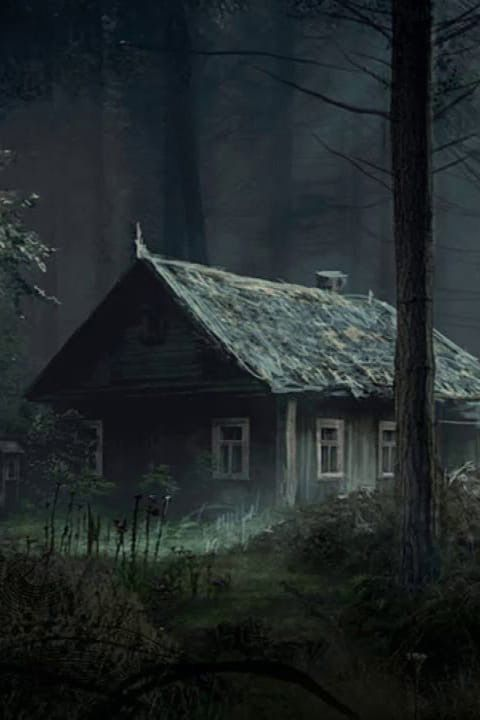
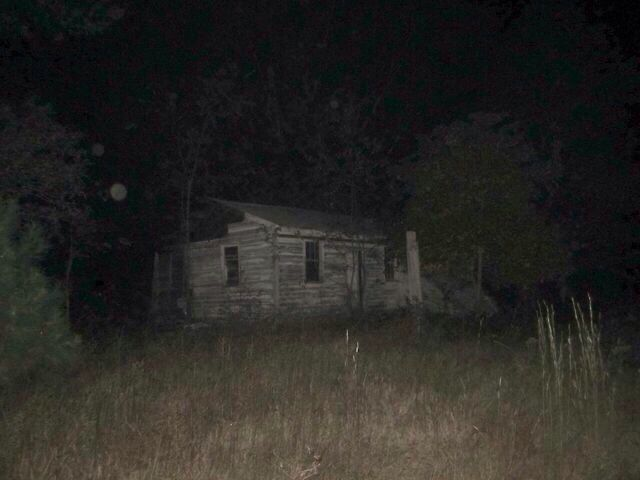
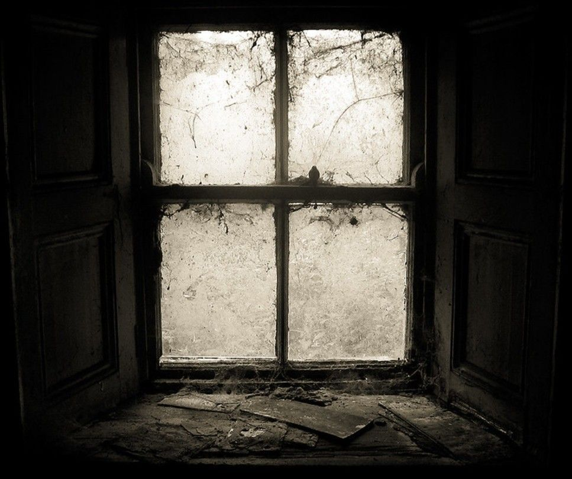

El clima era frío aún que estemos casi en verano, abril bromeaba sobre el bosque y qué tal vez nunca volveríamos a salir, todos reíamos, pero en las películas, el que bromea primero es el que desaparece primero. Seguimos caminando y encontramos varios huesos tirados, eran pequeños así que pensamos que eran de algunas aves que habitaban ahí, hasta que de pronto vimos una cabaña a la lejos.
  -Podemos ir ahí- dijo Mateo -Si, vamos, hay que investigar- dijo Abril. -¿No les parece medio raro encontrar una cabaña en el medio del bosque?- dijo Noah. -¿Tenes miedo?- Mateo le respondió burlandose de el. -No sé, pero es raro, además el señor dijo que tengamos cuidado- respondió Noah. -Vamos, total ya estamos acá- respondí yo. -Si dale, seguro era solo para asustarnos- dijo sol. Llegamos a la cabaña y alumbramos con las linternas hacia las ventanas, solo veíamos el polvo del vidrio y algunos muebles que no se distinguían por la suciedad de la ventana, se escuchaba el viento chocar contra las ventanas haciendo que se vea más aterrador aún.  -Tendríamos que volver, no me da buena espina- dijo Noah -Ya estamos acá, además no pasó nada- dijo Mateo -Bueno, votemos, podemos seguir caminando o entramos a la cabaña- dijo Abril. Seguir investigando el bosque Entrar y investigar la cabaña